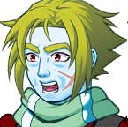
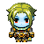

"I AM YOUR COUSIN'S MOST PERSISTENT, FLAMBOYANT, AND DEADLY FOE. I... AM ULTRASTAR!" -Ultrastar introducing himself to Steven.
Ultrastar is the self-proclaimed rival of Ethan who insists on killing him to take his place as the hero of prophecy, which he is very persistent about doing. Ultrastar is very over-the-top in everything that he does and is infamous for appearing in random places and challenging Ethan or his friends to an "Epic Battle". Although he is quite obsessive and flashy, Ultrastar is not a bad person at his core and does want to bring peace to others, but lets his own ambitions get in the way.
Ultrastar is a recurring mini-boss character that the player must fight many times throughout the game, usually appearing very suddenly, catching the player off guard with a surprise fight.
Biography
In VS THE WORLD
Prologue
Ultrastar originally appears in VS THE WORLD in the prologue, where is the sole fight and mini-boss character. When Ethan walks down BYU Campus to escape Morado and Avesty, he accidentally bumps into Ultrastar, who says that he recognizes Ethan as the hero prophesied by Destyl to defeat Ziza because Ethan gave him the "Tap of a Thousand Fights". Ultrastar then insists on fighting Ethan, telling Ethan that he being the hero would make them epic rivals.
After their initial encounter, Ultrastar retreats, insisting that he will "Never give up" and that he will show up and fight Ethan and his friends to take his place as the true hero. Ultrastar sticks to this promise, hiding in different places and ambushing the player and fighting them.
Ultrastar's portrait from VS THE WORLD

Ultrastar's field sprite

Chapters 1-7
Ultrastar is a recurring boss battle in Chapters 1-7, where he has little impact on the plot, but plans traps to lead Ethan and his friends into to "AMBUSH THEM WITH AN EPIC BATTLE!" Most of his encounters can be skipped, but there are a couple, particularly in Chapters 1, 3, and 6, the ones that involve Ethan, where Ultrastar is unavoidable.
Chapter 9
Spoiler Warning. Click button below to reveal spoilers
In Chapter 9, Ultrastar makes it to Ziza and challenges her to a duel to the death. Ziza has weaponized Melissa to become Melusa at this point, and Melusa utterly destroys Ultrastar, who barely flees with his life. Ultrastar eventually finds Ethan, who is defeated and discouraged. Ultrastar reveals that Ziza killed his sister, and that he feels that he needs to defeat Ziza to get justice for what she did. Ultrastar then teams up with Ethan for a little bit, but Ultrastar can't get over his obsession with being the hero and the two end up fighting at the end of the chapter.
Chapter 11
Spoiler Warning. Click button below to reveal spoilers
In Chapter 11, Ultrastar corners Ethan and co. one more time, and is about to fight them, when suddenly Avesty shows up as well. When Avesty appears, Ultrastar teams up with Ethan to defeat Avesty, because he does not like Avesty, and Avesty is one of the people he wants to really destroy at this point. They defeat Avesty, and Ultrastar runs off, saying that he will attack him another time when Ethan is not expecting it.
Chapter 12
Spoiler Warning. Click button below to reveal spoilers
In Chapter 12, Ultrastar is strangely absent until Ethan is alone. Ethan climbs up a long corridor, expecting to see Ziza, but really, it's Ultrastar challenging his rival to one last battle. Ethan beats Ultrastar, who then reveals that he is the youngest son of Ziza, and that Avesty was his half sister. They were really abusive to him as a kid, and so he wanted revenge, and that is why he was so adamant about being the hero. Ultrastar then realizes, with help from Destyl, that Ethan really is the hero, and the status of being a "hero" doesn't matter, but rather doing the right thing. So Ultrastar fights alongside Ethan and Morado to defeat Melusa and Ziza.
After everyone defeats Ziza, Ultrastar decides that he wants to live a "calm, peaceful life on earth full of action and passion!", and that he will still occasionally try to attack Ethan, but not to the death, but rather to the "kinda hurt". Ultrastar then becomes the greatest, most flamboyant doctor that the world has ever known.
Personality
Ultrastar is very flamboyant, over-the-top, and always talks like he is announcing to an audience. He is extremely obsessed with becoming the hero, to the point where he thinks about lines he will say and traps that he will set for Ethan and his friends nearly constantly. Although he is very obsessed, he does have a heart and does not like killing people. He is kind and uses his over-the-top nature to defeat enemies and to do over-the-top things to help people, like how he acts like an extreme doctor to heal Ethan. He also hates to lose and expresses his frustration the more you defeat him. He is also insecure, and struggles with the belief that his mother and father never loved him, that he was weaker than his siblings growing up, and that he is not the hero of prophecy.
Relationships with others
Ethan
Ultrastar considers Ethan to be his greatest rival and one of his main obstacles for "greatness". He has a reluctant respect for Ethan and his power, although he hates losing all the time, so Ultrastar studies his life, trying to find a weakness of any kind. Ethan sees Ultrastar as a threat at first, but after a lot of victories, Ethan slowly grows tired of fighting Ultrastar and starts to feel annoyed every time he sees him. However, the two slowly get to understand each other, and they eventually become close allies to finally take down Ziza.
Avesty
Ultrastar is Avesty's half brother, with them both sharing the same father. Avesty loathes Ultrastar, because he reminds her of her father who she murdered, who she both hates and feels guilty about killing. Avesty would emotionally abuse Ultrastar by telling him his father never loved him, and by telling him he would never be as strong as Ziza expected him to be. Ultrastar hates Avesty as a result, and eventually learned that Avesty killed his half sister on the other side, Destyl. Ultrastar decided to run away and vowed to destroy both Avesty and Ziza at that point. Ultrastar's hatred of Avesty is a driving force behind his obsession to be the hero, and Avesty still hates him, as seen when she tries to dig up his insecurities when disguised as Ethan. In Chapter 11, Ultrastar teams up with Ethan and his friends to defeat Avesty, showing that it is more important to him to defeat his evil half-sister than to be the hero.
Spoiler Warning. Click button below to reveal spoilers
Trivia
Ultrastar is, by far, the most fought major character in the game.
Ultrastar's frequent appearance out of seemingly nowhere drew inspiration from Gary Oak of the Pokemon series.
Ultrastar pulling out holding many swords in one hand was inspired by one of Tephani's abilities, who was a character Nathan Driggs designed in an earlier idea for a game, "Winter on the Continent".